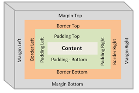

This is the property that sets the space that is outside the content, between the border and the edge of the webpage.
This is the property that allows us to surround the content with a "box", and specify the style, width and color of that "box".
This is the property that sets the space between the content and any defined borders.
 Home